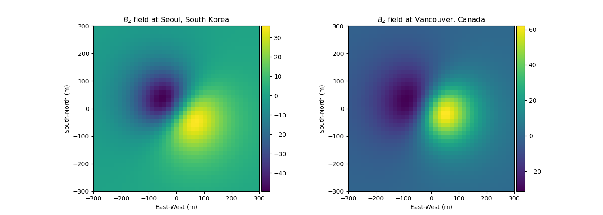

Note
Click here to download the full example code
PF: Magnetics: Analytics¶
Comparing the magnetics field in Vancouver to Seoul
import numpy as np
from SimPEG.potential_fields.magnetics import analytics
import matplotlib.pyplot as plt
from mpl_toolkits.axes_grid1 import make_axes_locatable
def run(plotIt=True):
xr = np.linspace(-300, 300, 41)
yr = np.linspace(-300, 300, 41)
X, Y = np.meshgrid(xr, yr)
Z = np.ones((np.size(xr), np.size(yr))) * 150
# Bz component in Korea
inckr = -8.0 + 3.0 / 60
deckr = 54.0 + 9.0 / 60
btotkr = 50898.6
Bokr = analytics.IDTtoxyz(inckr, deckr, btotkr)
bx, by, bz = analytics.MagSphereAnaFunA(
X, Y, Z, 100.0, 0.0, 0.0, 0.0, 0.01, Bokr, "secondary"
)
Bzkr = np.reshape(bz, (np.size(xr), np.size(yr)), order="F")
# Bz component in Canada
incca = 16.0 + 49.0 / 60
decca = 70.0 + 19.0 / 60
btotca = 54692.1
Boca = analytics.IDTtoxyz(incca, decca, btotca)
bx, by, bz = analytics.MagSphereAnaFunA(
X, Y, Z, 100.0, 0.0, 0.0, 0.0, 0.01, Boca, "secondary"
)
Bzca = np.reshape(bz, (np.size(xr), np.size(yr)), order="F")
if plotIt:
plt.figure(figsize=(14, 5))
ax1 = plt.subplot(121)
dat1 = plt.imshow(Bzkr, extent=[min(xr), max(xr), min(yr), max(yr)])
divider = make_axes_locatable(ax1)
cax1 = divider.append_axes("right", size="5%", pad=0.05)
ax1.set_xlabel("East-West (m)")
ax1.set_ylabel("South-North (m)")
plt.colorbar(dat1, cax=cax1)
ax1.set_title("$B_z$ field at Seoul, South Korea")
ax2 = plt.subplot(122)
dat2 = plt.imshow(Bzca, extent=[min(xr), max(xr), min(yr), max(yr)])
divider = make_axes_locatable(ax2)
cax2 = divider.append_axes("right", size="5%", pad=0.05)
ax2.set_xlabel("East-West (m)")
ax2.set_ylabel("South-North (m)")
plt.colorbar(dat2, cax=cax2)
ax2.set_title("$B_z$ field at Vancouver, Canada")
if __name__ == "__main__":
run()
plt.show()
Total running time of the script: ( 0 minutes 0.391 seconds)
Estimated memory usage: 9 MB